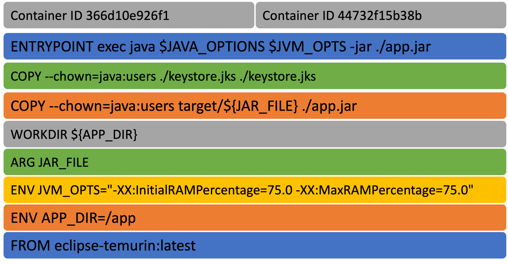

Docker for Dummies
aka Docker workshopby Bruno Valentim
What is Docker?
What is Docker?
Software platform that allows you to build, test, and deploy applications quickly.What is Docker?
Enables developers to automate the deployment and management of applications within software containers.What is Docker?
Provides a way to package applications and their dependencies into standardized units called Docker images.Docker ensures
- Portability
- Consistency
- Encapsulation
- Scaling
- Ecosystem
Docker vs Regular VMs
Docker vs Regular VMs
Docker vs Regular VMs

Terminology
- Docker Image
- Docker Container
- Docker Daemon
- Docker Client
- Docker Hub
Docker Image
A Docker image is a read-only template that contains a set of instructions for creating a container that can run on the Docker platform.
Docker Container
A Docker container is a runnable instance of an image. You can create, start, stop, move, or delete a container using the Docker API or CLI.
Docker Daemon
The Docker daemon (dockerd) listens for Docker API requests and manages Docker objects such as images, containers, networks, and volumes.
Docker Client
The Docker client (docker) is the primary way that many Docker users interact with Docker. When you use commands such as docker run, the client sends these commands to dockerd, which carries them out.
Docker Hub
Docker Hub is a cloud-based registry service which allows you to link to code repositories, build your images and test them, stores manually pushed images, and links to Docker Cloud so you can deploy images to your hosts.
Why use containers?
- Lightweight
- Portable
- Self-sufficient
- Scalable
- Secure
Images vs Containers
- Images are read-only
- Containers are writable
- Containers are created from images
- Containers are meant to be temporary
The Docker Hub
- Official images
- Community images
- Private images
Docker files and images
Docker files and images
How to build an image
How to build an image
1. Create a Dockerfile
How to build an image
1. Create a Dockerfile
FROM eclipse-temurin:latest
ENV APP_DIR=/app
ENV JVM_OPTS="-XX:InitialRAMPercentage=75.0 -XX:MaxRAMPercentage=75.0"
ARG JAR_FILE
WORKDIR ${APP_DIR}
COPY --chown=java:users target/${JAR_FILE} ./app.jar
COPY --chown=java:users ./keystore.jks ./keystore.jks
ENTRYPOINT exec java $JAVA_OPTIONS $JVM_OPTS -jar ./app.jar
How to build an image
2. Build the image
How to build an image
2. Build the image
$ docker build -t my-image .
How to build an image
2. Build the image
$ docker build -t name:tag .
How to build an image
3. Run the container
How to build an image
3. Run the container
$ docker run my-image
Docker files and images
Docker files and images
How is a Docker Image created
How is a Docker Image created
A series of layers
How is a Docker Image created
A series of layers
Each instruction in the Dockerfile creates a new layer
How is a Docker Image created
So, this...
FROM eclipse-temurin:latest
ENV APP_DIR=/app
ENV JVM_OPTS="-XX:InitialRAMPercentage=75.0 -XX:MaxRAMPercentage=75.0"
ARG JAR_FILE
WORKDIR ${APP_DIR}
COPY --chown=java:users target/${JAR_FILE} ./app.jar
COPY --chown=java:users ./keystore.jks ./keystore.jks
ENTRYPOINT exec java $JAVA_OPTIONS $JVM_OPTS -jar ./app.jar
How is a Docker Image created
...becomes this
How is a Docker Image created
...becomes this
Each layer builds on top of the previous layers.
How is a Docker Image created
Layers are cached...
How is a Docker Image created
Layers are cached...
...so if you change a line in the Dockerfile, only the layers after that line will be rebuilt.
How is a Docker Image created
And each running container...
How is a Docker Image created
And each running container...
...creates it's own layer.
How is a Docker Image created
And each running container...
...creates it's own layer.
So, if you change a file inside the container, that change will only be visible in that container's layer.
Docker files and images
Docker files and images
Multi-stage builds
Multi-stage builds
- Allow to run build steps in parallel
- Reduce the size of the final image
Multi-stage builds
FROM golang:1.21-alpine AS base
WORKDIR /src
COPY go.mod go.sum .
RUN go mod download
COPY . .
FROM base AS build-client
RUN go build -o /bin/client ./cmd/client
FROM base AS build-server
RUN go build -o /bin/server ./cmd/server
FROM scratch
COPY --from=0 /bin/client /bin/server /bin/
COPY --from=build-client /bin/client /bin/
COPY --from=build-server /bin/server /bin/
ENTRYPOINT [ "/bin/server" ]
Example from Docker Docs
Multi-stage builds
You can parallelize the build
Image from Docker Docs
Docker files and images
Docker files and images
Best practices
Best practices
- Use official images
- Use multi-stage builds
- Exclude with .dockerignore
- Create ephemeral containers
- Don't install unnecessary packages
- Decouple applications
- Sort multi-line arguments
- Leverage the Build Cache
Best practices
Use official images
Official images are curated and optimized by the Docker community and Docker, Inc.
Best practices
Use multi-stage builds
- Lets you reduce the size of your final image.
- Make sure that the resulting output only contains the files that's needed to run the application.
- Build more efficiently by executing build steps in parallel.
Best practices
Exclude with .dockerignore
Files and directories specified in .dockerignore are excluded from the build context.
Best practices
Create ephemeral containers
Ephemeral means that the container can be stopped and destroyed, then rebuilt and replaced with an absolute minimum set up and configuration.
Best practices
Don't install unnecessary packages
Only install the packages that are required for the application to run.
Best practices
Decouple applications
Each container should have a single concern.
Best practices
Sort multi-line arguments
RUN apt-get update && apt-get install -y \
bzr \
cvs \
git \
mercurial \
subversion \
&& rm -rf /var/lib/apt/lists/*
Best practices
Leverage the Build Cache
Perform instructions that are less likely to change at the top of the Dockerfile.
For example, RUN instructions that install packages are less likely to change than COPY or ADD instructions.
Docker Compose
Docker Compose
Tool for defining and running multi-container Docker applications.
Simplifies the process of running and orchestrating multiple Docker containers that work together as a single application.
Docker Compose
- Service Definition
- Container Orchestration
- Environment Standardization
- Easy setup and tear down
- Scalability and load balancing
- Integration with other tools
Docker Compose
Docker Compose
How to use Docker Compose
How to use Docker Compose
1. Create a docker-compose.yml file
How to use Docker Compose
1. Create a docker-compose.yml file
version: '3.8'
services:
web:
image: nginx:latest
ports:
- 80:80
volumes:
- ./web:/usr/share/nginx/html
depends_on:
- db
db:
image: mysql:latest
environment:
- MYSQL_ROOT_PASSWORD=secret
- MYSQL_DATABASE=myapp
- MYSQL_USER=myuser
- MYSQL_PASSWORD=mypassword
volumes:
- dbdata:/var/lib/mysql
cache:
image: redis:latest
volumes:
dbdata:
How to use Docker Compose
You can use interpolation
...
db:
image: mysql:latest
environment:
- MYSQL_ROOT_PASSWORD=${MYSQL_ROOT_PASSWORD}
- MYSQL_DATABASE=myapp
- MYSQL_USER=myuser
- MYSQL_PASSWORD=${MYSQL_PASSWORD}
volumes:
- dbdata:/var/lib/mysql
...
How to use Docker Compose
2. Run the container
How to use Docker Compose
2. Run the container
$ docker-compose up -d
How to use Docker Compose
2. Run the container
or you just start a specific service...
How to use Docker Compose
2. Run the container
or you just start a specific service...
$ docker-compose up -d web
How to use Docker Compose
3. Stop the container
How to use Docker Compose
3. Stop the container
$ docker-compose down